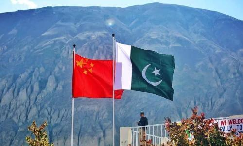

morly旅游圈
巴基斯坦伊斯兰共和国，简称“巴基斯坦”（Pakistan），意为“圣洁的土地”、“清真之国”。95%以上的居民信奉伊斯兰教，是一个多民族伊斯兰国家。国语为乌尔都语。巴基斯坦位于南亚次大陆西北部，南濒阿拉伯海，东接印度，东北邻中华人民共和国，西北与阿富汗交界，西邻伊朗。海岸线长980公里。南部属热带气候，其余属亚热带气候。首都伊斯兰堡，前首都卡拉奇是最大城市。
中巴友谊:
中巴友谊指的是中国和巴基斯坦人民之间的友谊，有中国网友亲切的称巴基斯坦为“巴铁”。有多好的”感情“能使它拥有一个专有名词呢？我们常将最好的朋友称之为“铁哥们”，而“巴铁”意为巴基斯坦与中国是最好的朋友。 你见过“六星红旗”吗？多出的那一颗，代表着巴基斯坦。代表着巴基斯坦愿意永远坚定地做围绕在中国周围的那一颗小星。巴基斯坦与中国国界线长约599公里却只有60多名士兵驻守，基本处于不设防的状态。巴基斯坦也是唯一一个将维护中巴两国友谊写进宪法和教材的国家。
2018年汶川地震，举国皆惊。巴基斯坦在中国地震发生后共提供了两万多顶帐篷，是全球向中国灾区捐赠帐篷最多的国家之一，他们把战略储备仓库里的帐篷全都搬光了并且拒绝了中国的收购金。巴基斯坦人民将中国人视为家人，在战乱的地区甚至有专门的士兵予以保护，在巴基斯坦有的店铺甚至会注明中国人免费。
景点推荐：
【罕萨山谷】
罕萨山谷位于罕萨河北端，距离中国的新疆仅30多公里，海拔2500米，周围群山环绕，风景秀丽，是巴基斯坦最有名的旅游胜地之一，据说也是世界五大长寿乡之一。在罕萨，当地人几乎从不患病，六七十岁根本不叫老人，八九十岁仍可在地里劳作，健康地活过一百岁在这里并不算什么稀罕事。
必去理由：巴基斯坦最美丽的山谷之一
景点所在省、州：吉尔吉特－巴尔蒂斯坦 [Gilgit–Baltistan]
景点所在城市：卡里马巴德 [Karimabad]
【南迦·帕尔巴特峰】
南迦· 帕尔巴特峰海拔8125米，是世界第九高峰，堪称巴基斯坦最高的山峰。南迦·帕尔巴特峰由五座雪峰组就。除主峰外，北肩峰8070米，南肩峰8042米。位于青藏高原和南亚次大陆西北部地区的喜马拉雅山脉西段巴控克什米尔地区。南迦帕尔巴特峰南侧的鲁泊尔岩壁标高差为世界最大，达4800米；此外西边的迪亚米尔岩壁同样著名的难以攀爬，此山因为发生了许多次惨重的山难而被称之为“悲剧之山”、“恶魔之山”。
必去理由：巴基斯坦最高的山峰
景点所在省、州：阿扎德克什米尔 [Azad Kashmir]
【巴德夏希清真寺】
巴德夏希清真寺是巴基斯坦最大的清真寺。“巴德夏希”是波斯语“皇帝”的音译，故又称“皇家清真寺”。该寺位于拉合尔古城北部，巴德夏希清真寺是世界遗产名录之二。为印度莫卧儿王朝皇帝穆哈伊·丁·穆罕默德·阿迈提尔于1673年～1674年主持建成莫卧儿帝国皇帝奥朗则布时期兴建，是巴基斯坦最重要的清真寺之一，也是著名的旅游景点、
必去理由：巴基斯坦最重要的清真寺之一
景点所在省、州：旁遮普省 [Punjab Province]
景点所在城市：拉合尔 [Lahore]
【伊斯兰堡】
伊斯兰堡坐落于巴基斯坦东北部的波特瓦尔高原上，紧邻拉瓦尔品第，是巴基斯坦的首都。该城市是一座港口城市，为巴基斯坦的政治中心，为世界上最年轻的城市之一。伊斯兰堡面湖靠山，四季郁郁葱葱，是一座优美而富有特色的城市，多现代化建筑,因而并没有多少古迹。为了可以丰富市民的生活，伊斯兰堡建立了博物馆、环境优雅的公园和壮观的清真寺，让市民和游客可以更好的感受伊斯兰堡的宜人环境和人文气息。
费萨尔清真寺是巴基斯坦乃至南亚地区最大的清真寺，同时也是世界第六大清真寺。夏克巴利山顶公园是全市最著名的游览胜地，公园里树木葱茏，百花争艳，山顶上有一块专门供来访外国政府首脑植树留念的园地。玫瑰和茉莉公园以栽培玫瑰花、茉莉花而闻名，每当鲜花盛开的季节，花香袭人，姹紫嫣红。
必去景点：巴基斯坦的首都 景点所在省、州：伊斯兰堡首都区 [Islamabad Capital Territory] 景点所在城市：伊斯兰堡 [Islamabad]
内容整理至网络，如有侵权，请联系我们！1255394075@qq.com
